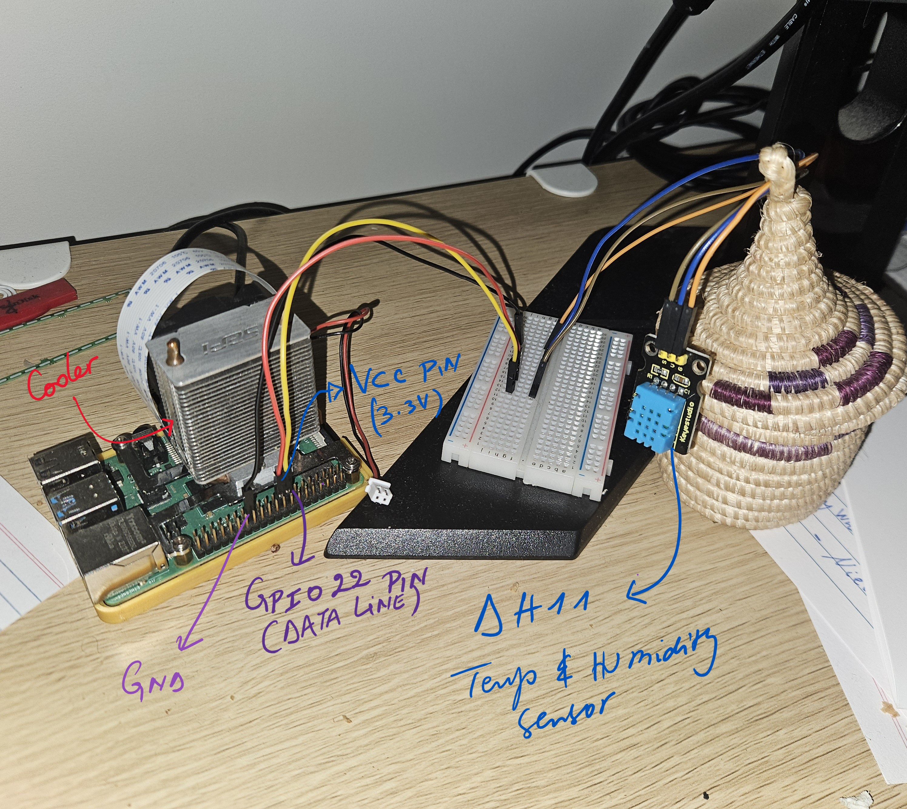
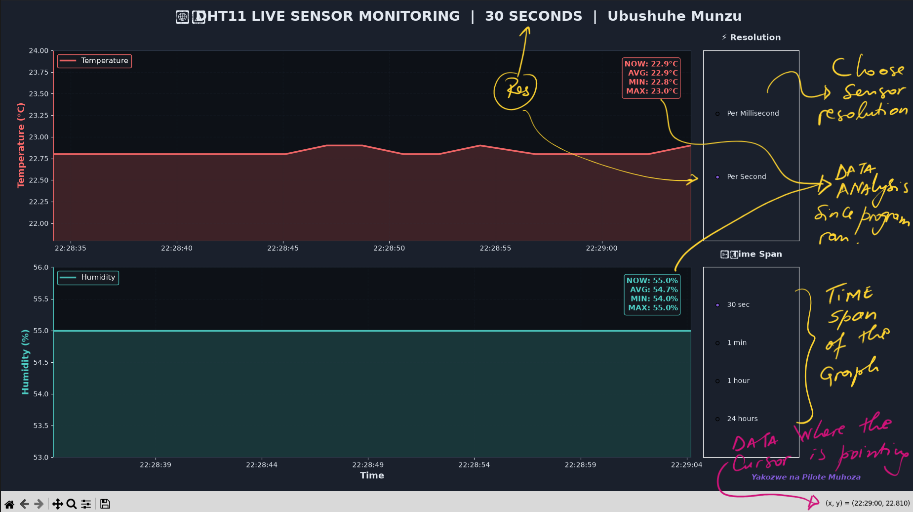

"Measure what is measurable, and make measurable what is not so."
— attributed to Galileo Galilei
Overview
This guide documents how I built a live-updating temperature and humidity dashboard using a DHT11 sensor and a Raspberry Pi. The sensor is polled continuously, readings are aggregated per-second and kept in rolling buffers, and a dark-mode Matplotlib dashboard plots temperature and humidity in real time — with radio-button controls to switch between millisecond/second resolution and different time spans (30 seconds up to 24 hours).
Components Used
| Component |
Model |
Purpose |
| 🧠 Board |
Raspberry Pi |
Runs the Python data collection & plotting script |
| 🌡️ Sensor |
DHT11 |
Digital temperature & humidity sensor |
| 🔌 GPIO Pin |
GPIO 22 |
Data line for the DHT11 |
| 🐍 Libraries |
adafruit_dht, matplotlib, numpy |
Sensor driver + live plotting |
Wiring the Sensor
Step 1 — Connect the DHT11 to the Pi
- Connect the DHT11 VCC pin to a 3.3V or 5V pin on the Pi (check your specific module's rating).
- Connect GND to any ground pin.
- Connect the data pin to GPIO 22 (or another free GPIO — just update the pin in the script).
- If your module doesn't have a built-in pull-up resistor, add a 10kΩ resistor between the data line and VCC.
⚠️Double-check polarity before powering on — reversing VCC and GND is a common way to damage the sensor.

Software Setup
Install the required Python packages on the Pi:
pip3 install adafruit-circuitpython-dht matplotlib numpy
💡On some Pi models you may also need sudo apt install libgpiod2 for the DHT library to access GPIO correctly.
Initializing the Sensor
The script starts by importing the libraries it needs and creating the sensor object on the chosen GPIO pin:
import adafruit_dht
import board
sensor = adafruit_dht.DHT11(board.D22)
Reading the Sensor
Two sets of rolling buffers (Python deques) store the incoming readings: one capped at 60,000 entries for high-frequency sampling, and one capped at 86,400 entries (24 hours' worth of one-per-second readings) for the longer view.
Step 2 — Poll the sensor in a loop
Inside the main loop, the script reads sensor.temperature and sensor.humidity, appends them to the millisecond buffers, and accumulates values so that once a full second has elapsed it can store an averaged second-level reading too. DHT11 reads occasionally throw a RuntimeError (a normal quirk of the sensor) — the script simply catches it and tries again on the next loop.
temperature = sensor.temperature
humidity = sensor.humidity
if temperature is not None and humidity is not None:
timestamps_ms.append(current_time)
temperatures_ms.append(temperature)
humidities_ms.append(humidity)
Building the Live Dashboard
The dashboard uses Matplotlib's dark_background style with a custom coral-red / turquoise palette for temperature and humidity. Two stacked subplots share the same time axis, each with a filled area under the curve and a live-updating stats box showing the current, average, minimum, and maximum values.
Step 3 — Set up the figure and axes
- Create the figure with
plt.ion() so it updates interactively without blocking the script.
- Lay out a temperature subplot on top and a humidity subplot below using
subplot2grid.
- Style both axes: dark background, coloured spines, dashed gridlines, and a legend.
Redrawing on Every Reading
The update_plot() function is called after every sensor read. It swaps in the latest data for the active resolution (millisecond or second), re-fills the area under each curve, rescales the x-axis to the selected time span, and auto-scales the y-axis with a bit of padding so the trace never touches the edges.
Interactive Controls
Two sets of radio buttons sit beside the plots:
- Resolution — toggle between Per Millisecond (raw readings) and Per Second (averaged readings)
- Time Span — zoom the x-axis to 30 sec, 1 min, 1 hour, or 24 hours
Both sets trigger update_plot() on click, so switching views is instant even while new readings keep streaming in.

Results & UI
The dashboard title updates live to show the active resolution and time span, e.g. "⚡ MILLISECOND | 30 SECONDS".
In testing:
- Millisecond mode: useful for spotting sensor read noise and short spikes
- Second mode: smoother trend lines, better for the 1-hour and 24-hour views
- Console log: every reading is also printed with a timestamp, e.g.
⏰ 14:32:07.123 | 🌡️ 22.0°C | 💧 48.0%
Pressing Ctrl+C stops data collection and leaves the final plot open (plt.ioff(); plt.show()) so the last state can be reviewed or saved.
Source Code
Full source code: click me 😃
Note: If you have any questions or suggestions for this guide, please leave a comment below or send me a message directly. Found an issue or want to contribute? Feel free to open a PR or raise an issue.
Comments
Share your thoughts, questions, or build notes below! Or send me a message directly.